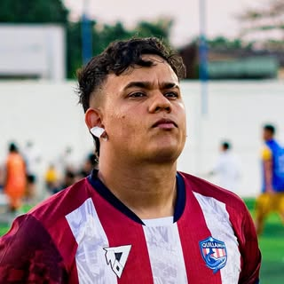
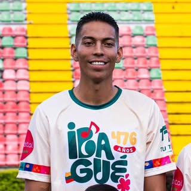

@el_bermu09
IbaguéSu contenido es de humor, calle y situaciones cotidianas. También es emprendedor y tiene una comunidad de creadores en la región.
207,6 milSeguidores3,6%Interacción
De las nueve cuentas que propuso Management CM, esta propuesta conserva cinco, de perfil futbolero y de humor, repartidas entre Ibagué, Barranquilla, Medellín y Cali. Las otras cuatro se retiraron por su costo por mil views o por la ubicación de su audiencia. Ninguna está aprobada todavía: la decisión de cuáles entran al plan de influencers es de YaJuego.
Buscamos creadores que le hablen al hincha, que cubran varias ciudades y que mezclen tamaños de cuenta, y que además se pueda comprobar quién los sigue.
Afinidad con el producto
Cuatro de las cinco cuentas tienen el fútbol en su contenido o en su comunidad: retos, periodismo, equipos de creadores o una hinchada propia, la de Atlético Nacional y la del Deportivo Cali. La quinta aporta humor y calle. Es un contexto natural para integrar YaJuego en partidos, retos y experiencias futboleras.
Alcance geográfico
Ibagué (2 cuentas), Barranquilla, Medellín y Cali, donde 41% de la audiencia de @uncalenoporahi se concentra.
Alcance y cercanía
Una cuenta pasa de 200 mil seguidores, otra está en 80,2 mil y tres tienen 16,1 mil o menos. La más grande interactúa 3,6% y la de 80,2 mil, 5,0%; entre las pequeñas, @soypipefutbol llega a 5,0%. Las cuentas grandes aportan alcance y las pequeñas, una comunidad cercana.
Calidad de audiencia
De cuatro de las cinco cuentas hay datos de audiencia: credibilidad, seguidores reales, país y edad. Con ellos más abajo se ve qué tan sólido es cada perfil, incluida la cuenta que pide revisión antes de aprobarse.
De mayor a menor audiencia. Cada creador abre su ficha con rendimiento, audiencia e inversión estimada.
Su contenido es de humor, calle y situaciones cotidianas. También es emprendedor y tiene una comunidad de creadores en la región.

Creador de humor y entretenimiento que, además, hace parte de un equipo de fútbol de creadores. Su perfil permite integrar YAJUEGO desde el humor y las dinámicas futboleras, con potencial para conectar con una audiencia amplia.
Creador enfocado en el Deportivo Cali y el fútbol colombiano. Su audiencia tiene una alta concentración en Cali, lo que lo convierte en una opción estratégica para conectar con los hinchas de la región.

Creador de retos y juegos de fútbol que permite integrar YAJUEGO mediante dinámicas entretenidas y participativas.
Creador y periodista enfocado en Atlético Nacional, con una comunidad de hinchas que conecta desde la pasión y la identidad verdolaga.
Seguidores e interacción, lado a lado. Una cuenta pequeña con buena interacción puede rendir más por peso invertido que una grande con interacción baja.
| Creador | Plaza | Seguidores | Interacción |
|---|---|---|---|
| @el_bermu09 | Ibagué | 207.602 | 3,6% |
| @elgonchi__ | Barranquilla | 80.209 | 5,0% |
| @uncalenoporahi | Cali (audiencia) | 16.123 | 3,8% |
| @soyeltruji | Ibagué | 14.861 | 0,1% |
| @soypipefutbol | Medellín | 10.292 | 5,0% |
Tamaño no es calidad. Estas son las señales de audiencia que Blindy calcula para cada cuenta. De una de ellas no hay datos.
| Creador | Credibilidad | Seguidores reales | Audiencia en Colombia | 13 a 17 años |
|---|---|---|---|---|
| @el_bermu09 | Sin dato | Sin dato | Sin dato | Sin dato |
| @elgonchi__ | 70% | 55,6% | 90,7% | 6,2% |
| @uncalenoporahi | 75% | 56,7% | 78,9% | 2,6% |
| @soyeltruji | 42% | 25,6% | Fuera de los cuatro primeros países | 8,8% |
| @soypipefutbol | 73% | Sin dato | 73,9% | 9,1% |
Solo 25,6% de sus seguidores son reales y su credibilidad es 42%. Sus mayores audiencias están en India, Italia y Estados Unidos, y su interacción es de 0,1%, frente a 3,6% a 5,0% en el resto del roster. Las señales son consistentes con seguidores comprados o inactivos.
De @el_bermu09 Blindy no tiene datos de audiencia, así que no se puede verificar ninguna de estas señales. Conviene pedírselos a Management CM.
Valor bruto por talento, alcance y views esperadas. No se indica la moneda de los valores.
| Creador | Acciones | Valor bruto | Alcance est. | Views est. | Costo por mil views |
|---|---|---|---|---|---|
| @el_bermu09 | Reel collab + derecho de pauta por un mes | $3.505.618 | 4.555 | 318.980 | $10.990 |
| @elgonchi__ | Reel collab + derecho de pauta por un mes | $4.089.888 | 32.577 | 231.750 | $17.648 |
| @soyeltruji | Reel collab + derecho de pauta por un mes | $1.840.449 | 24.357 | 32.240 | $57.086 |
| @uncalenoporahi | Reel collab + derecho de pauta por un mes | $4.235.955 | 22.601 | 39.380 | $107.566 |
| @soypipefutbol | Reel collab + derecho de pauta por un mes | $2.191.011 | 4.555 | 4.470 | $490.159 |
En dos cuentas las views estimadas coinciden con el promedio de sus reels en Blindy. En tres no: @el_bermu09 (318.980 estimadas contra 1.033.239), @elgonchi__ (231.750 estimadas contra 49.581) y @soypipefutbol (4.470 contra 312.745). Antes de comparar costos conviene saber de dónde salió cada estimación. Además, el PDF repite el mismo alcance (4.555) en @soypipefutbol y @el_bermu09.
Estos cinco talentos suman $15.862.921. Dejamos cerca de $4 millones sin asignar para llegar a unos $20 millones.
La reserva está pensada para @danigoals__, cuya cotización nos pidieron revisar. Mientras no esté cerrada, ese valor queda sin asignar y no se suma a las cifras de esta propuesta. Cuando se confirme, el roster se completa y el total queda cerca de $20 millones.